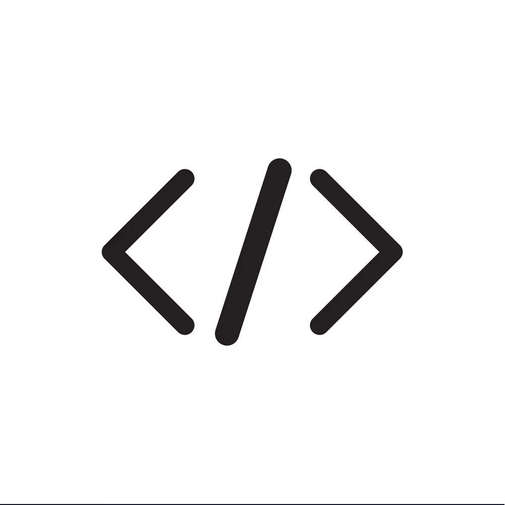
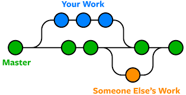

Purpose of Readme file
Its a file that explains what your project is about and how to use it.
A blog that documents your growth and reflections as you learn coding, design, or tech skills.
Its a file that explains what your project is about and how to use it.

A wireframe is a visual outline or blueprint of a website or app.It shows where things go (like images, buttons, and text) without focusing on colors or styling.

A branch in Git is like a separate workspace or timeline in your project where you can make changes without affecting the main code.